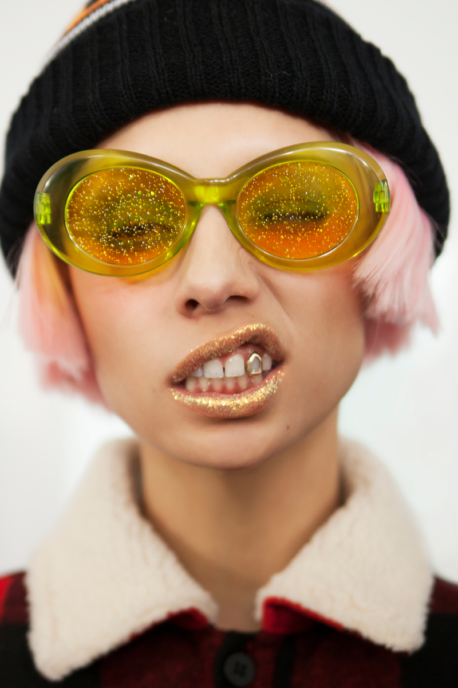
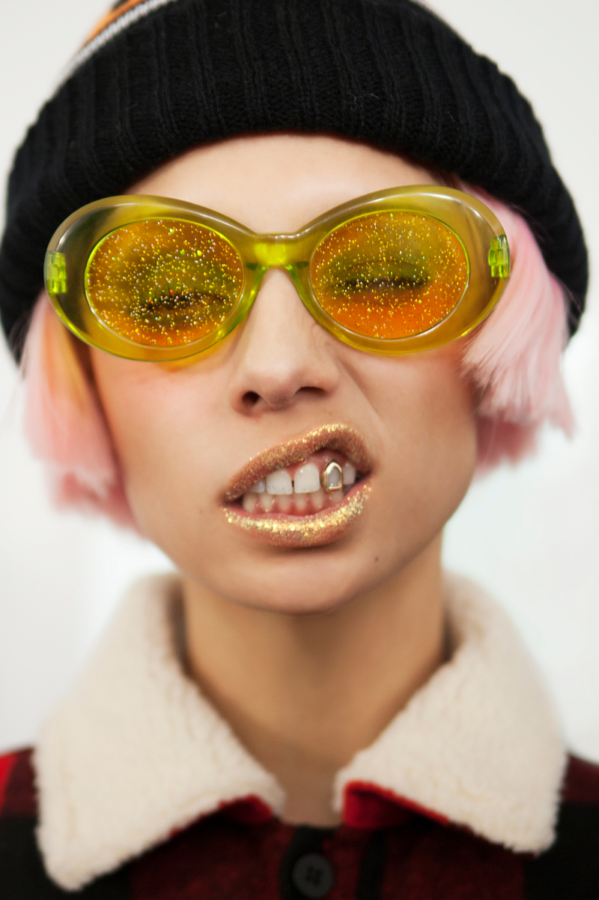
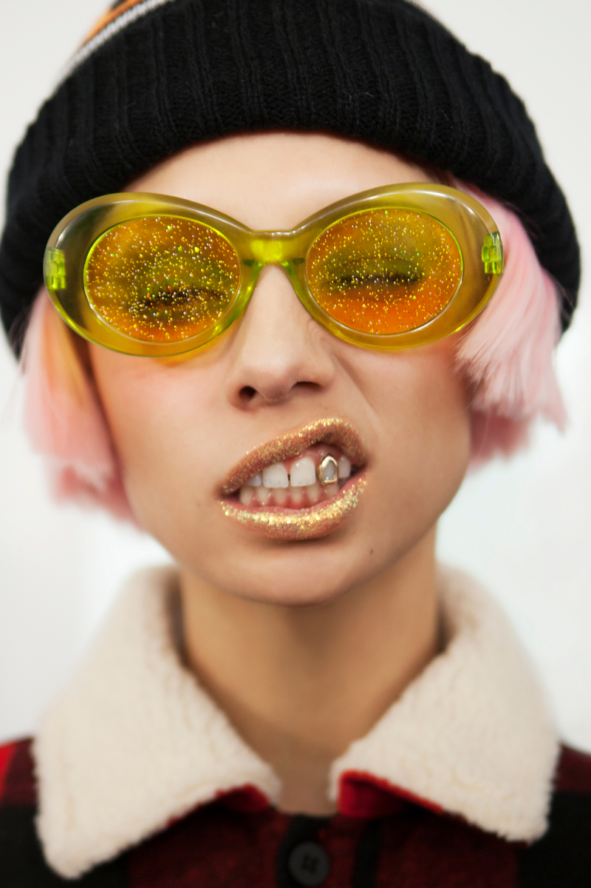

Summer Sunnies
We jumped on a call with top eyewear designer, Poppy Lu, from her home in New York City to discuss what's in and what's not in, for this summer's sunglasses look.

We jumped on a call with top eyewear designer, Poppy Lu, from her home in New York City to discuss what's in and what's not in, for this summer's sunglasses look.